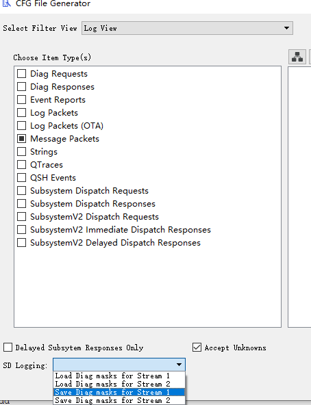
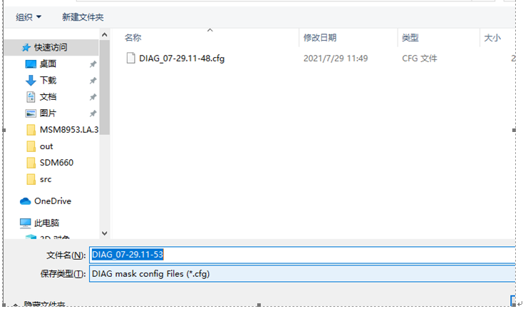
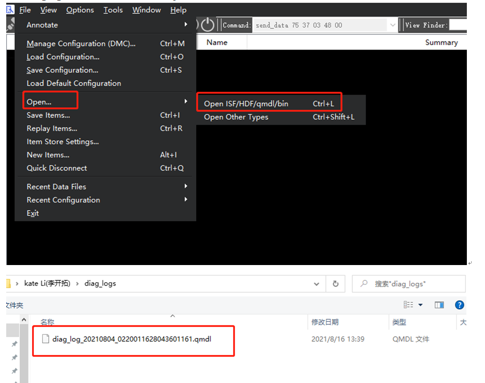
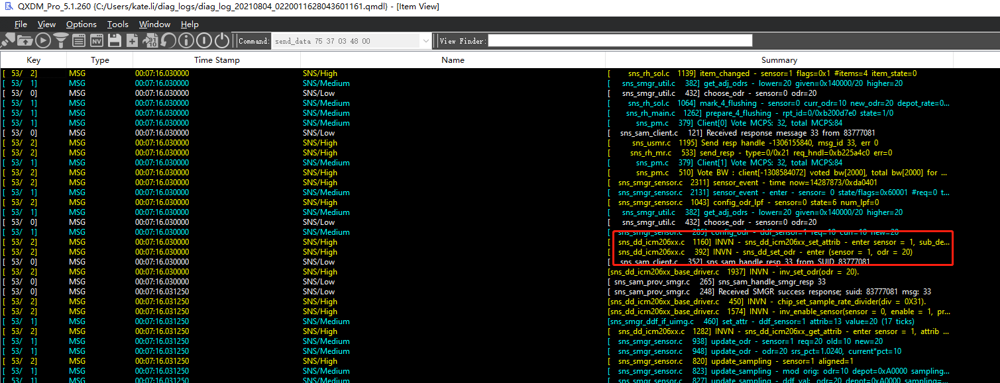

方法¶
制作default_logmask.cfg 文件¶
打开QXDM按照下面方法进行F5进入下面页面，sensors选择SNS 和QDSP6即可,文件已上传保留efault_logmask.cfg



设备上捉取sensor log¶
Push efault_logmask.cfg file to device¶
adb root
adb shell mkdir /sdcard/diag_logs/
adb push default_logmask.cfg /sdcard/diag_logs/
开启log¶
/vendor/bin/diag_mdlog -f /sdcard/diag_logs/default_logmask.cfg -o /sdcard/diag_logs/ &
复现问题¶
打开sensor 等复现问题步骤
pull log¶
adb pull /sdcard/diag_logs/ 0530_sensor_log_1
解析log¶
打开qxdm工具,选取pull出来的qmdl文件

解析出来的log如下

捉sensor初始化的log¶
adb root
adb shell stop sensors
adb shell “echo ‘related’ > /sys/bus/msm_subsys/devices/subsys2/restart_level”
/vendor/bin/diag_mdlog -f /sdcard/diag_logs/default_logmask.cfg -o /sdcard/diag_logs/ &
adb shell start sensors